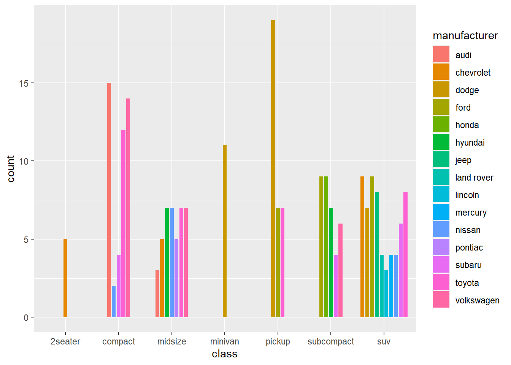
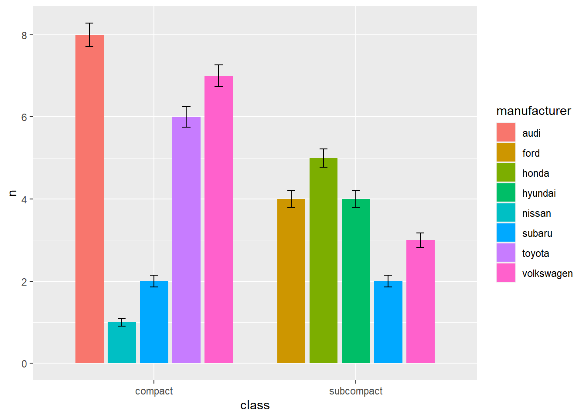

── Attaching packages ─────────────────────────────────────── tidyverse 1.3.2 ──
✔ ggplot2 3.3.6 ✔ purrr 0.3.5
✔ tibble 3.1.8 ✔ dplyr 1.0.10
✔ tidyr 1.2.1 ✔ stringr 1.4.1
✔ readr 2.1.3 ✔ forcats 0.5.2
── Conflicts ────────────────────────────────────────── tidyverse_conflicts() ──
✖ dplyr::filter() masks stats::filter()
✖ dplyr::lag() masks stats::lag()8 position()
8.1 stack
8.2 identity
8.3 dodge
8.4 fill
8.5 jitter
8.6 position_dodge2
ggplot(mpg, aes(class, fill = manufacturer))+
geom_bar(position=position_dodge2(preserve="single",padding=0.2),width=0.9) 
8.7 实例
#添加误差线（注：本例只是为了展示效果，没有实际意义）
mpg2<-filter(mpg,class==c("compact","subcompact"))
group_ma<-group_by(mpg2,manufacturer,class)
#detach("package:plyr", unload=TRUE)
data_sumr<- summarise(group_ma,n=n(),se=n()/(10*sqrt(n())))`summarise()` has grouped output by 'manufacturer'. You can override using the
`.groups` argument.data_sumr# A tibble: 10 × 4
# Groups: manufacturer [8]
manufacturer class n se
<chr> <chr> <int> <dbl>
1 audi compact 8 0.283
2 ford subcompact 4 0.2
3 honda subcompact 5 0.224
4 hyundai subcompact 4 0.2
5 nissan compact 1 0.1
6 subaru compact 2 0.141
7 subaru subcompact 2 0.141
8 toyota compact 6 0.245
9 volkswagen compact 7 0.265
10 volkswagen subcompact 3 0.173p<-ggplot(data_sumr, aes(class,n,fill = manufacturer))
p1<-p+geom_bar(stat="identity",position = position_dodge(width=0.8), width=0.7)
p1+geom_errorbar(aes(ymin=n-se,ymax=n+se),width=0.2,position = position_dodge(width=0.8))